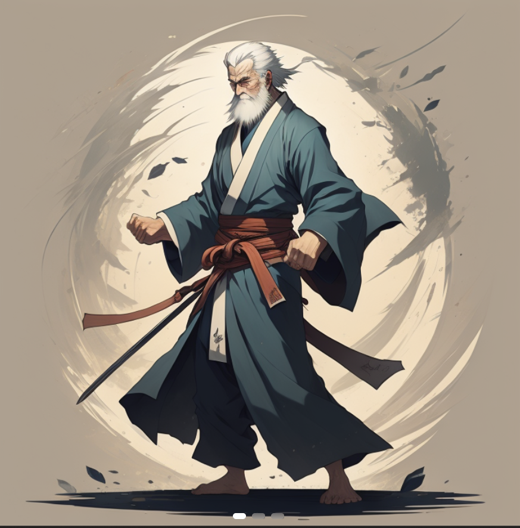
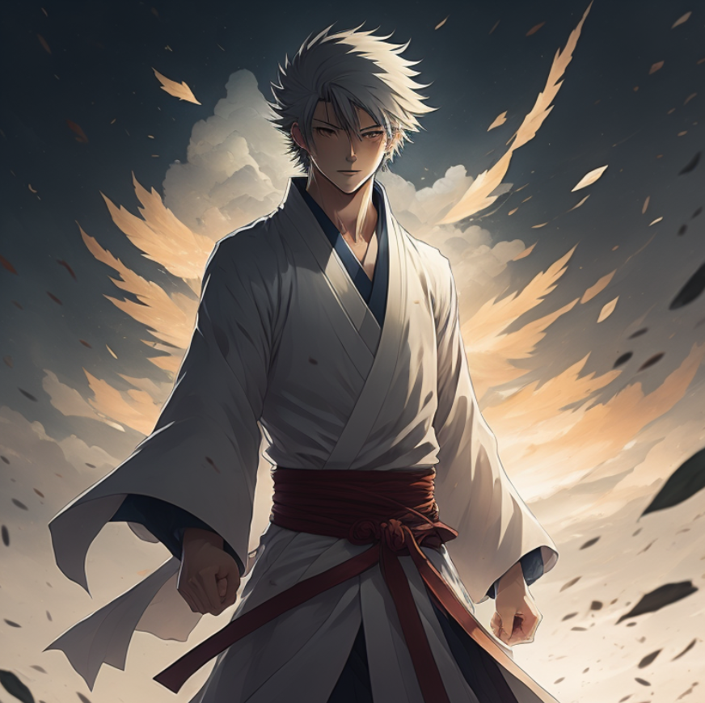

Ki-Aikido on Aikido-itsepuolustuslajin suuntaus, joka keskittyy kehon ja mielen yhteyden kehittämiseen ja hyödyntämiseen
itsepuolustustilanteissa. Aikido on japanilainen taistelulajimuoto, joka perustuu liikkumiseen, tasapainon säilyttämiseen
ja vastustajan voiman ohjaamiseen sen sijaan, että vastustajaan hyökättäisiin suoraan.
Ki-Aikodo ja Aikido
Ki-Aikido eroaa perinteisestä Aikidosta siinä, että sen painopisteenä on erityisesti "ki", mikä tarkoittaa henkistä energiaa
tai elämänvoimaa. Ki-aikidossa pyritään ymmärtämään ja hallitsemaan omaa ki-energiaa ja käyttämään sitä liikkeiden
suorittamisessa ja vastustajan voiman ohjaamisessa. Tämä tekee siitä enemmän kuin pelkän itsepuolustuslajin – se voi auttaa
harjoittajia kehittämään henkisiä ja fyysisiä taitoja, kuten keskittymiskykyä, tasapainoa, joustavuutta ja rauhallisuutta.
Lisää Ki-Aikidon ja Aikidon eroista

Ki
Ki-Aikidon harjoittelussa keskitytään usein erilaisiin ki-harjoituksiin ja meditatiivisiin tekniikoihin, joiden avulla
harjoittaja voi syventää ymmärrystään omasta itsestään ja omasta ki-energiastaan. Liikkeitä tehdään yleensä vastustajan
kanssa, mutta painotus on enemmän tekniikan suorittamisessa kuin voiman käytössä.
Mikä/Mitä on "Ki"?

Ki-Aikido Aikidon tyylisuuntana
Ki-Aikido on yksi monista Aikidon tyylisuunnista, ja sen tavoitteena on yleensä enemmän henkisen kehityksen edistäminen kuin
kilpailullinen itsepuolustus. Harjoittajat pyrkivät yleensä välttämään konflikteja ja käyttämään Aikidon periaatteita
konfliktien ratkaisemiseen rauhanomaisesti. On olemassa muitakin Aikidon variaatioita
Aikidon tyylisuuntia